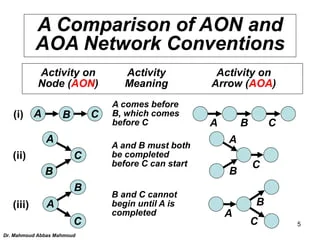
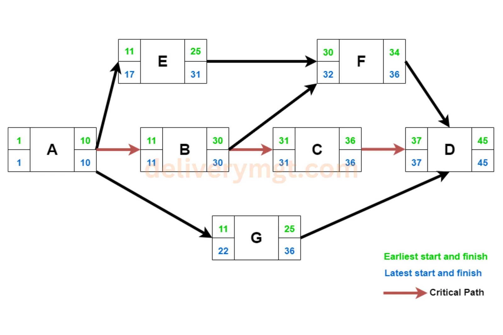
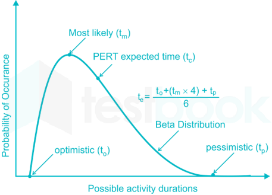
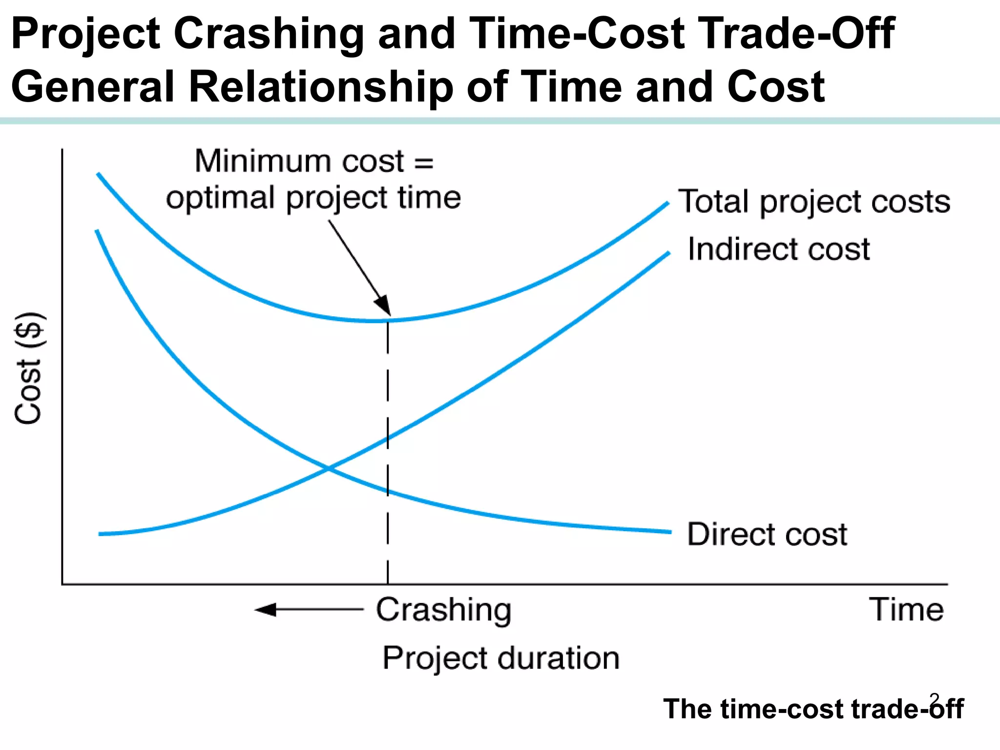

CPM & PERT (NETWORK ANALYSIS)
Exam Revision Guide for Competitive Exams
High-frequency topics: CPM (deterministic) vs PERT (probabilistic), PERT expected time $t_e = \frac{O + 4M + P}{6}$, Variance $\sigma^2 = \left(\frac{P - O}{6}\right)^2$, Float calculations (Total, Free, Independent), Project Crashing.
1. Core Concepts & Definitions
1.1 CPM (Critical Path Method)
CPM = Deterministic network scheduling method
Assumptions:
• Activity times are known with certainty
• Single time estimate per activity
• Focus: Find critical path (longest path determines project duration)
Critical Path = Sequence of activities with zero slack/float
= Path that determines minimum project completion time
= Delaying any critical activity delays entire project
1.2 PERT (Program Evaluation Review Technique)
PERT = Probabilistic extension of CPM
Key difference:
• Three time estimates per activity: Optimistic (O), Pessimistic (P), Most Likely (M)
• Accounts for uncertainty in activity times
• Calculates expected time and variance
Used for: High-uncertainty projects (R&D, new product development)
CPM used for: Well-understood projects (construction, manufacturing)
1.3 Network Terms (Critical Definitions)
Event (Node):
= Completion of one or more activities
= No time duration; instantaneous point in time
Activity (Edge):
= Work requiring time and resources
= Has duration; connects two events
Dummy Activity:
= Zero-duration activity showing precedence relationship
= Used when technological constraint differs from logical constraint
ES (Earliest Start) = Earliest time activity can start
EF (Earliest Finish) = ES + Duration
LS (Latest Start) = Earliest time activity can start without delaying project
LF (Latest Finish) = Latest time activity can finish without delaying project

Figure 1.1: Network Representation — Activity-on-Arrow (AOA) vs Activity-on-Node (AON) & Precedence Relations.
1.4 Float (Slack) — Most-Tested Concept
Float = Flexibility in scheduling; how much an activity can be delayed without affecting project duration
Types of Float:
Total Float (TF):
= LS - ES = LF - EF
= Activity can be delayed by this amount without delaying project
Free Float (FF):
= Slack that doesn't affect any successor activity
= ES(successor) - EF(activity)
Independent Float (IF):
= Float independent of both predecessor and successor
= Max{0, ES(successor) - LF(predecessor) - Duration}
Critical Path: All activities have TF = 0 (zero float)
1.5 Forward & Backward Pass
Forward Pass (Calculate ES, EF):
ES(i) = max{EF of all predecessors}
EF(i) = ES(i) + Duration(i)
Start with ES=0 at project start
Backward Pass (Calculate LS, LF):
LF(j) = min{LS of all successors}
LS(j) = LF(j) - Duration(j)
Start with LF = EF at project end
Slack = LS - ES = LF - EF
If Slack = 0 → Critical activity

Figure 1.2: Critical Path Calculation — Earliest/Latest Times ($ES, EF, LS, LF$), Total Float, & Highlighted Critical Path.
2. Essential Formulas & Principles
2.1 PERT Expected Time (Three-Point Estimate)
$$t_e = \frac{O + 4M + P}{6}$$
Where: $O$ = Optimistic time, $M$ = Most likely time, $P$ = Pessimistic time.
$$\text{Variance } \sigma^2 = \left(\frac{P - O}{6}\right)^2, \qquad \text{Standard Deviation } \sigma = \frac{P - O}{6}$$

Figure 1.3: PERT Beta Probability Distribution — Optimistic ($t_o$), Most Likely ($t_m$), & Pessimistic ($t_p$) Time Estimates.
2.2 Project Variance and Duration Probability
$$\sigma_p^2 = \sum_{i \in \text{CP}} \sigma_i^2 \qquad \implies \qquad \sigma_p = \sqrt{\sigma_p^2}$$
Sum of variances of critical activities only.
$$Z = \frac{T_d - T_e}{\sigma_p}$$
Where: $T_d$ = Desired completion time, $T_e$ = Expected project completion (critical path length), $\sigma_p$ = Project standard deviation.
2.3 Float Calculation
Total Float:
$$TF = LS - ES = LF - EF$$
Free Float:
$$FF = \text{ES(successor)} - \text{EF(activity)}$$
Independent Float:
$$IF = \max\{0, \text{ES(successor)} - \text{LF(predecessor)} - t_d\}$$
2.4 Project Metrics
Project Duration (CPM):
$$T_p = \max(\text{EF of all end activities}) = \text{Length of Critical Path}$$
Number of Critical Paths:
= Count paths from start to end with zero float
= Multiple critical paths indicate higher project risk
3. Crashing & Activity Types Classification
3.1 Activity Types & Crashing Matrix
| Concept |
Definition |
Purpose |
Exam Note |
| Critical Activity |
Activity with zero total float ($LS = ES, LF = EF$) |
Determines project duration; any delay delays project |
Focus for acceleration; lies on critical path |
| Non-Critical Activity |
Activity with positive total float ($LS > ES$) |
Can be delayed without affecting project; has scheduling flexibility |
Lower priority for crashing; can absorb small delays |
| Dummy Activity |
Zero-duration edge showing precedence; no work required |
Clarify dependency when technological constraint differs from logical |
Used in AOA (Activity-on-Arc) networks |
| Crashing |
Reducing activity duration by adding resources (overtime, extra labor) |
Accelerate project completion; usually at increased cost |
Focus on critical activities first; crash by lowest cost slope |
| Crash Cost Slope |
$\text{Cost Slope} = \frac{\text{Crash Cost} - \text{Normal Cost}}{\text{Normal Time} - \text{Crash Time}}$ |
Economic analysis: Is crashing cost < benefit of early completion? |
Crash activities on critical path with lowest cost slope first |

Figure 1.4: Time-Cost Trade-off in Project Crashing — Normal Point, Crash Point, Cost Slope ($\Delta C / \Delta T$), & Optimum Duration.
3.2 Activity Float Types Interpretation
| Float Type |
Formula |
Meaning |
Use Case |
| Total Float |
$LS - ES$ or $LF - EF$ |
How much activity can be delayed without delaying project |
Primary scheduling metric; identifies critical path |
| Free Float |
$ES(\text{next}) - EF(\text{current})$ |
Delay available without affecting immediate successor |
More restrictive than total float; local constraint |
| Independent Float |
$\max\{0, ES(\text{next}) - LF(\text{prev}) - t_d\}$ |
Delay independent of both predecessor and successor |
Rare; most activities have constraints from both directions |
4. Key Points to Remember
- CPM uses single time estimate; PERT uses three (O, M, P). PERT accounts for uncertainty; better for risky/R&D projects.
- Critical path = longest sequence of activities from start to finish. Determines minimum project duration.
- Critical activities have zero float ($LS = ES, LF = EF$). Any delay on critical path delays entire project.
- PERT expected time $t_e = \frac{O + 4M + P}{6}$. CRITICAL exam formula. Weights most-likely ($M$) at 4x.
- PERT variance $\sigma^2 = \left(\frac{P-O}{6}\right)^2$; standard deviation $\sigma = \frac{P-O}{6}$. Larger spread ($P-O$) = higher uncertainty.
- Forward pass calculates ES, EF; backward pass calculates LS, LF. Forward: $ES = \max(EF \text{ predecessors})$; Backward: $LF = \min(LS \text{ successors})$.
- Total float = $LS - ES = LF - EF$. Shows how much activity can be delayed without delaying project.
- Free float = $ES(\text{successor}) - EF(\text{activity})$. Delay available without affecting next activity's early start.
- Non-critical activities have positive float; can absorb delays. Critical activities have zero float; delays cascade to project.
- Project variance = sum of variances of critical activities only. Non-critical paths don't contribute to project uncertainty.
- Z-score = $\frac{T_d - T_e}{\sigma_p}$. Used for probability calculations with normal distribution.
- Crashing focuses on critical activities first (with lowest crash cost slope). Non-critical activity crashing does not reduce project duration.
- Multiple critical paths increase project risk; delays can occur independently on different paths.
- Dummy activity (zero-duration edge) used to show precedence constraints. Common in AOA networks; clarifies when logical constraint differs from technological.
- Slack and float are synonymous terms (both = $LS - ES$). Exam uses both interchangeably.
Revision Focus Areas (Frequency-Ranked):
1. Critical path identification | 2. Float types (TF, FF, IF) | 3. PERT expected time & variance | 4. Forward/Backward pass | 5. Crashing cost slope